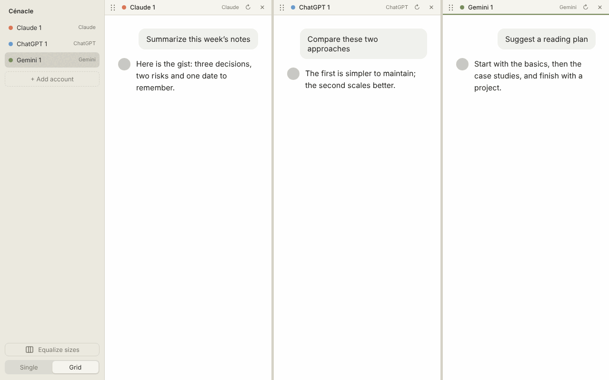
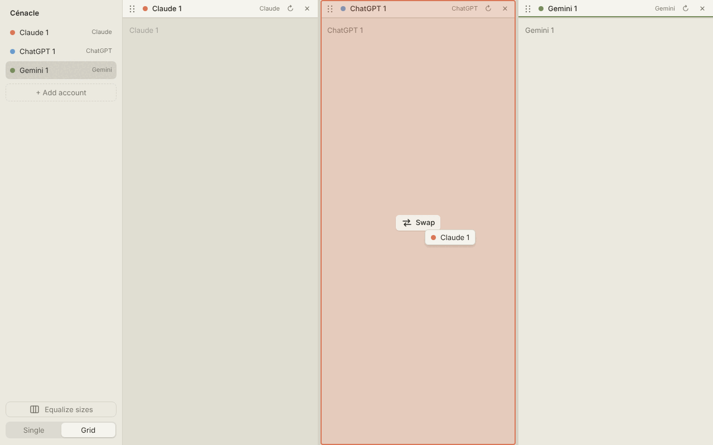
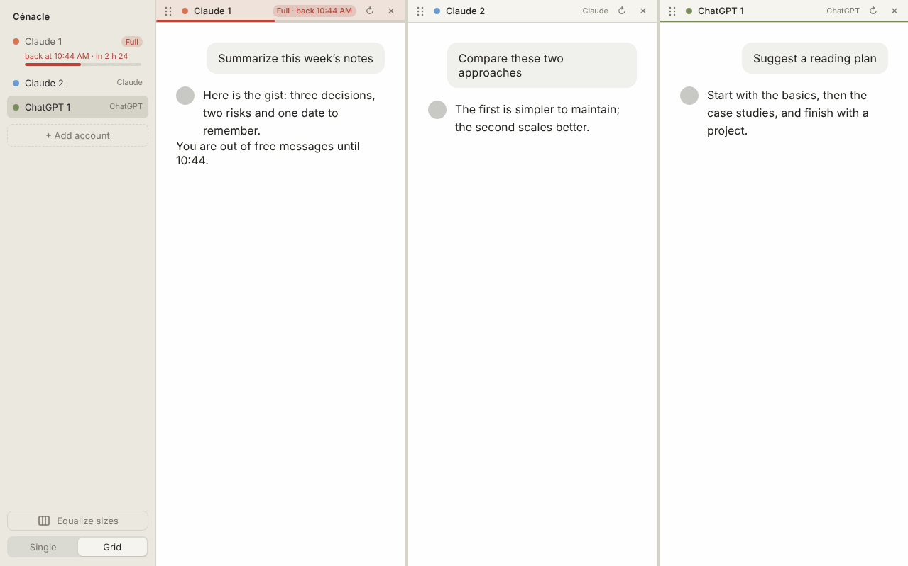
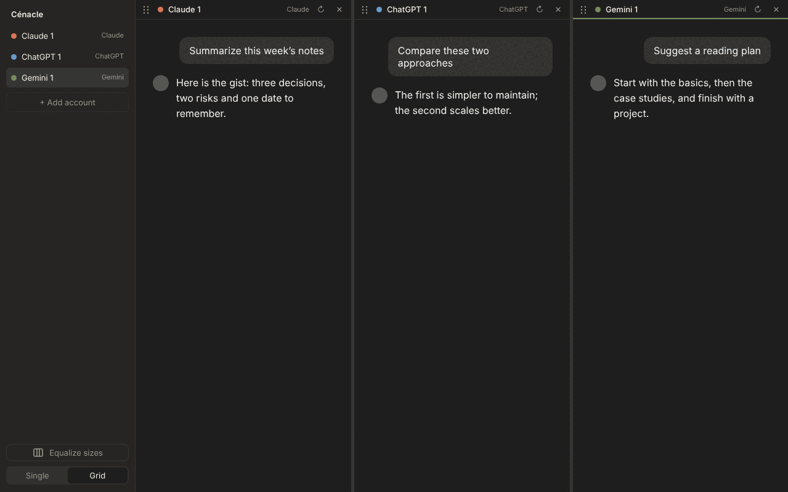

Isolated sessions
Each account has its own cookies and local storage. Two accounts on the same service never see each other, and sessions are kept between launches.
macOS · Windows · Linux · Unofficial project
Claude, ChatGPT, Gemini, Perplexity: every account keeps its own isolated session. Switch between them with a shortcut, or show them all in a grid.
Free · No API, only the public websites

4 supported services



Everything you need to work with several assistants, with no tabs or browser profiles to manage. Illustrations are simplified.
Each account has its own cookies and local storage. Two accounts on the same service never see each other, and sessions are kept between launches.
Claude, ChatGPT, Gemini and Perplexity today. Another service is a single entry in the code.
Drag and drop accounts to build rows and columns, swap them, resize them. The layout is kept between launches, and hidden accounts keep running.
When Claude says you are close to your limit, the account shows a pill, the time it comes back and an hourglass bar. A notification tells you when it is usable again.
Group your accounts under their service and filter the sidebar to see one service at a time.
The Development menu shows the memory and CPU taken by each account, refreshed every 2 seconds.
⌘1 to ⌘9 (Ctrl+1 to 9 elsewhere) to switch accounts, Ctrl+Tab to cycle. Hold the key and the numbers appear.
The title carries the account name and the icon its color. A click brings the app forward on the right account.
Notifications, copy and paste, full screen and the microphone for voice mode. Camera, screen capture and location are refused.
Your system is detected automatically. Installers come from the latest GitHub release.
The installers are not code-signed yet: macOS asks for a manual approval on first launch and Windows shows a SmartScreen warning. Windows and Linux (AppImage) builds update themselves; on macOS, download each new version. See how to open it.
Cénacle is free and built in spare time. A donation helps pay for code signing and the development of new features and services.